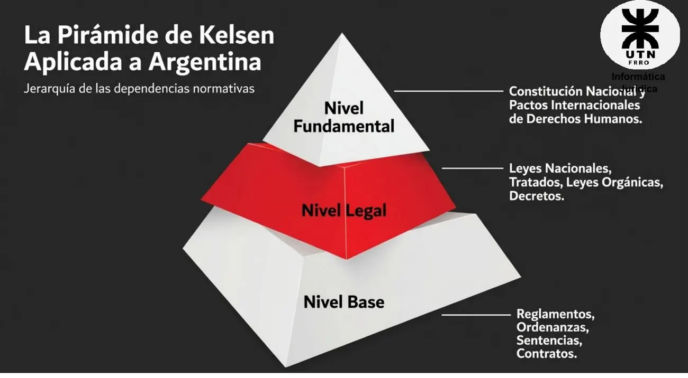

Eje 1: entorno del negocio
Qué es el Derecho, cómo se ordenan las normas, quién hace qué en el Estado y ante quién se discute un conflicto.
Resumen no juzgado. Todavía nadie evaluó si alcanza para estudiar solo con esto.
La base es la presentación «2 - Entorno del Negocio» de 2026. Las páginas sin otra aclaración son de ese archivo. Lo de 2025 sale de «2.2 - Entorno Del Negocio».
Las palabras de la materia
Derecho
El Derecho es el conjunto de normas jurídicas generales positivas que surgen de la sociedad y que tienen la finalidad de regular la convivencia entre los miembros de esa sociedad, las personas, y de estos con el Estado.
Presentación «1 - Presentación de la Materia», 2025, pág. 12
Informática
El conjunto de conocimientos científicos y técnicas que hacen posible el tratamiento automático de la información por medio de ordenadores electrónicas.
Presentación «1 - Presentación de la Materia», 2025, pág. 12
Jurídica es lo «que atañe al derecho o se ajusta a él» (RAE, pág. 2). La RAE tiene 17 acepciones de «derecho». La presentación 2025 las lista (pág. 4) y la 13 es la que nos importa: un conjunto de principios y normas que regulan las relaciones humanas y cuya observancia puede imponerse de manera coactiva.
Tipos de Derecho
Son cuatro pares. Se clasifican por separado, así que una misma cosa cae en un lado de cada par (presentación «1 - Presentación», 2026, pág. 7).
| Par | Un lado | El otro lado |
|---|---|---|
| Objetivo y subjetivo | La norma escrita | La facultad del individuo de exigir su cumplimiento |
| Escrito y consuetudinario | La ley promulgada y formalizada | Las normas basadas en la costumbre y la tradición |
| Nacional e internacional | Las leyes que rigen dentro del territorio de un Estado | Las que regulan las relaciones entre Estados |
| Público y privado | Relaciones de subordinación con el Estado | Relaciones de coordinación entre particulares en igualdad |
En criollo
Objetivo y subjetivo es lo que más se confunde. Pensalo como la regla y tu botón para usarla. La norma que dice cómo se hace un testamento es derecho objetivo. Tu posibilidad de hacer el tuyo es derecho subjetivo.
La cátedra tiene un ejercicio de clase para practicar esto, con su corrección: Clasificar según tipos de Derecho.
Sistema jurídico
Un sistema es un «módulo de elementos interrelacionados que desarrollan interacciones entre sí». Aplicado al Derecho (pág. 18):
Sistema jurídico
Conjunto de las normas, las instituciones y los agentes que hacen al derecho que rige en un determinado territorio.
Presentación «2 - Entorno del Negocio», 2026, pág. 18
La presentación 2025 (pág. 14) agrega que es un ordenamiento vinculado por relaciones de fundamentación, derivación y coordinación. Las normas forman parte de un todo. No están aisladas ni inconexas.
El sistema jurídico está regido por el Estado. Busca favorecer la convivencia y fijar pautas de conducta, y limita el libre albedrío. Es distinto en distintos países. La misma acción puede ser delito o no serlo, o tener otra pena. En la República Argentina, el ordenamiento jurídico se ordena desde la Constitución (pág. 23).
El Estado tiene tres componentes: territorio, habitantes y orden jurídico (pág. 19).
Caracteres del sistema
| Carácter | Qué significa (pág. 19) |
|---|---|
| Unidad | Una fuente fundacional única |
| Coherencia | Ausencia absoluta de contradicciones internas |
| Jerarquía | Orden estricto de precedencia en la ejecución |
| Especialidad / Cronología | Reglas lógicas para resolución de conflictos |
| Plenitud | Principio de clausura (art. 19): lo que no está prohibido, está permitido |
La coherencia se sostiene con tres criterios para resolver conflictos entre normas, que la presentación 2025 agrupa bajo ese carácter (pág. 17): jerárquico, de especialidad y cronológico. La presentación 2026 los muestra como renglones propios.
La cátedra lo compara con un sistema operativo. Territorio es la infraestructura, habitantes son los usuarios y orden jurídico es el código base (pág. 19). Una norma inferior que contradice a la superior es un «error de sistema» (pág. 21).
Bajo plenitud, la presentación 2025 (pág. 17) pone dos cosas: los delitos informáticos y el art. 19. No desarrolla el vínculo en la diapositiva.
La pirámide de Kelsen
Ordena las normas por jerarquía. Cada nivel depende del de arriba.

| Nivel | Qué entra (pág. 20) |
|---|---|
| Fundamental | Constitución Nacional y pactos internacionales de derechos humanos |
| Legal | Leyes nacionales, tratados, leyes orgánicas, decretos |
| Base | Reglamentos, ordenanzas, sentencias, contratos |
La pirámide de 2025 no lista lo mismo
La presentación 2025 trae dos pirámides de Kelsen con otro contenido por nivel. En la pág. 15: fundamental, Constitución y pactos internacionales; legal, leyes orgánicas, especiales, leyes ordinarias y decretos de ley; base, reglamentos, ordenanzas y sentencias. En la pág. 16: fundamental, Constitución nacional y tratados de DD.HH.; legal, leyes nacionales, locales y tratados; base, normas, sentencias, contratos y testamentos. Si te piden ubicar normas en la pirámide, preguntá en tu comisión cuál toma.
Principio de jerarquía y supremacía (art. 31 CN, pág. 21). La ley suprema de la Nación es la Constitución, las leyes del Congreso y los tratados. Las autoridades provinciales están obligadas a conformarse a ella. Cualquier norma inferior que la contradiga es inválida. A una ley provincial contradictoria la cátedra la marca como inconstitucional.
La norma jurídica
Según Kelsen, una norma es jurídica porque tiene sanción (págs. 22 y 27). Tiene tres pasos.
| Paso | Qué es |
|---|---|
| Supuesto de hecho | La condición o el acto |
| Fuerza coercitiva | La regla que establece una sanción impuesta por la fuerza en caso de resistencia |
| Efecto jurídico | La sanción, socialmente organizada y ejecutada por el grupo social |
La presencia de la sanción es lo que le da a la norma su carácter jurídico. La ciencia jurídica se ocupa de estudiar estos sistemas.
Las características de la norma jurídica son tres: coercibilidad, heteronomía y bilateralidad (pág. 25). La presentación no las define con palabras. Coercibilidad se entiende por lo de arriba. Para las otras dos, buscá la definición de tu comisión.
Hay dos «tres caracteres»
Los caracteres del sistema (unidad, coherencia, plenitud) no son las características de la norma (coercibilidad, heteronomía, bilateralidad). El TP2 de 2025 pide trabajar con los primeros y el de 2026, con los segundos.
La ley
- Exige o prohíbe algo en consonancia con la justicia y para el bien de la sociedad en su conjunto.
- La norma jurídica no es única: también hay decreto, resolución y ordenanza.
Fuente: pág. 24.
Sancionada, ¿por quién?
La presentación se contradice. La pág. 3 dice que el Poder Legislativo «escribe y sanciona las leyes». La pág. 24 dice «Aprobada: Poder Legislativo» y «Sancionada: Poder Ejecutivo». Copiamos las dos tal como están. Consultá con la cátedra cuál espera.
Los tres poderes
| Poder | Qué hace (pág. 3) |
|---|---|
| Legislativo | Escribe y sanciona las leyes. Es el motor de creación de reglas |
| Ejecutivo | Administra el país y ejecuta las leyes. Es el núcleo de procesamiento administrativo |
| Judicial | Interpreta la ley y resuelve conflictos. Es el sistema de manejo de errores y resolución |
Poder Legislativo: sistema bicameral (arts. 44 a 74)
| Cámara de Diputados | Senado | |
|---|---|---|
| Representa a | El pueblo de la Nación | Las provincias y CABA |
| Proporción | Según la cantidad de habitantes | 3 senadores por provincia (igualdad territorial) |
| Mandato | 4 años, se renueva por mitades cada 2 años | 6 años, se renueva por tercios cada 2 años |
| Iniciativa exclusiva | Impuestos y reclutamiento de tropas | Acuerdos para jueces y embajadores |
Fuente: pág. 4.
Poder Ejecutivo (arts. 87 a 107)
- Presidente de la Nación. Jefe supremo, jefe de gobierno y responsable político de la administración general (art. 99).
- Vicepresidente. Preside el Senado y reemplaza al presidente en caso de vacancia.
- Jefe de Gabinete de Ministros. Ejerce la administración general del país y ejecuta el presupuesto (art. 100).
- Ministros secretarios. Despachan los negocios de la Nación en sus áreas.
Fuente: pág. 5.
Poder Judicial
Es uno de los tres poderes de la República Argentina. Es a la vez poder político y servicio público. Lo regula la sección tercera de la segunda parte de la Constitución (arts. 108 a 119, con los 116 y 117 como centrales).
Misión. Asegurar la supremacía de la Constitución, ser su intérprete final, custodiar los derechos y garantías, y participar en el gobierno de la República (pág. 6).
Valores (pág. 7):
- Independencia. Externa, de los otros poderes del Estado. Interna, de los tribunales superiores.
- Imparcialidad. Neutralidad objetiva ante las partes en conflicto.
Quiénes forman el sistema de justicia
La presentación 2025 (pág. 18) dice que está compuesto por el Poder Judicial de la Nación, el Poder Judicial de cada provincia, el Ministerio Público Fiscal, el Ministerio Público de la Defensa y el Consejo de la Magistratura.
- Corte Suprema de Justicia de la Nación (CSJN). Es el vértice del sistema. Requisitos (art. 111): ser abogado de la Nación con 8 años de ejercicio y tener las calidades para ser senador (30 años de edad, 6 de ciudadanía, renta mínima). Los designa el Presidente con acuerdo de dos tercios de los miembros presentes del Senado (art. 99 inc. 4). Fuente: pág. 10.
- Consejo de la Magistratura (art. 114). Selecciona jueces por concurso público, emite ternas vinculantes, tiene facultades disciplinarias y abre procesos de remoción. También administra los recursos y ejecuta el presupuesto de la justicia. Su composición busca equilibrio entre política, jueces, abogados y academia. Fuente: pág. 9.
- Ministerio Público (art. 120). Órgano independiente, con autonomía funcional y autarquía financiera. Sus miembros gozan de inmunidades funcionales, y se coordina con el Poder Judicial de la Nación. Promueve la actuación de la justicia en defensa de la legalidad y de los intereses generales. Se divide en Procuración General (fiscales, acusación) y Defensoría General (defensores, garantías). Fuente: pág. 11.
Instancias
De abajo hacia arriba (pág. 8):
- Juzgados de Paz, Pequeñas Causas o Comunitarios.
- Juzgados de 1ª Instancia.
- Cámaras de Apelaciones o tribunales de 2ª Instancia.
- Corte Suprema.
En Santa Fe el orden es el mismo, con la Corte Suprema de Justicia Provincial arriba de todo y los juzgados de primera instancia divididos por fuero. Lo regula la Ley Orgánica del Poder Judicial Provincial (pág. 15).
Los roles son magistrados, funcionarios y empleados (2025, pág. 19). Los niveles se conectan por la apelación.
Actores: no solo abogados
Martilleros, procuradores, agrimensores, asistentes sociales, arquitectos, contadores, escribanos, traductores, calígrafos, médicos, psiquiatras e ingenieros (2025, pág. 9). La presentación «1 - Presentación» de 2026 (pág. 10) dice que el funcionamiento del Poder Judicial «requiere una red de profesionales especializados para procesar la evidencia y la verdad objetiva». Marca a ingenieros y peritos informáticos como cruciales para la recolección, preservación y análisis de evidencia digital y el mantenimiento de la e-Justicia.
Fueros
Fuero: competencia a la que legalmente están sometidas las partes según la materia específica del conflicto (pág. 16).
| Fuero | Qué trata |
|---|---|
| Civil | Disputas entre particulares, contratos, daños y perjuicios |
| Comercial | Sociedades, quiebras, títulos de crédito |
| Penal | Delitos, investigación de crímenes, sanciones |
| Laboral | Conflictos de trabajo, despidos, accidentes (ART) |
| Familia | Divorcios, adopciones, cuotas alimentarias |
| Contencioso-administrativo | Demandas y litigios directos contra el Estado |
En criollo
Instancia y fuero son dos ejes distintos. El fuero es de qué tema se trata, como la sección de un negocio. La instancia es en qué escalón estás. Un juicio laboral puede estar en primera instancia y, si apelan, pasar a la cámara, sin dejar de ser laboral.
Nación o provincia
Las provincias conservan todo el poder no delegado por la Constitución al gobierno federal (arts. 5, 121 y 122). Se dan sus instituciones, eligen sus gobernadores, legisladores y jueces sin intervención federal y aseguran su administración de justicia (págs. 13 y 14). También dictan sus propias constituciones y códigos de procedimiento, y manejan la justicia ordinaria, como delitos comunes o disputas entre vecinos locales (pág. 14).
Del lado federal, la pág. 14 resume el art. 116 como asuntos de estricto interés nacional, conflictos que cruzan fronteras provinciales o internacionales, y causas donde la Nación es parte, narcotráfico, terrorismo y contrabando.
| Jurisdicción nacional o federal | Jurisdicción provincial (ej. Santa Fe) | |
|---|---|---|
| Naturaleza del fuero | De excepción: limitado y expreso | Común u ordinario: todo lo no delegado |
| Máximo tribunal | CSJN | Corte Suprema de Justicia Provincial |
| Ejemplos | Narcotráfico, contrabando, delitos informáticos federales, juicios contra el Estado Nacional | Robos comunes, divorcios, litigios comerciales locales, juicios laborales provinciales |
Fuente: pág. 17.
Competencia federal (art. 116, pág. 12). Se define de tres formas.
- Por la materia. Puntos regidos por la Constitución, leyes nacionales y tratados internacionales.
- Por las personas. Causas de embajadores o cónsules, asuntos donde la Nación es parte, conflictos entre dos o más provincias o entre vecinos de distintas provincias.
- Por el lugar. Causas de almirantazgo y jurisdicción marítima.
Para ubicar un caso, hacé dos preguntas en orden. ¿Es de excepción federal por materia, personas o lugar? Si no, va a la justicia provincial. Después, ¿de qué tema es? Eso te da el fuero.
Delito
Son acciones o conductas contrarias a la ley. Afectan bienes como la vida, la libertad o la propiedad (pág. 26). De acá salen dos pares que hay que distinguir.
Dolo y culpa
| Dolo (ejecución intencional) | Culpa (falla por negligencia) | |
|---|---|---|
| Concepto | Existe la voluntad, el conocimiento y la intención de cometer el acto ilícito | No hay intención directa de dañar, pero el daño ocurre por negligencia, imprudencia o impericia |
| Analogía técnica | Un ataque DDoS premeditado para tumbar un servidor | Un desarrollador que deja un puerto abierto por error de configuración, causando una fuga de datos |
| Cómo reconocerlo | Quería hacerlo y conocía las consecuencias | No quería el resultado, pero falló en su deber de cuidado |
Fuente: pág. 28.
Pena y resarcimiento
| Pena (castigo) | Resarcimiento (restauración) | |
|---|---|---|
| Ámbito | Derecho Penal | Derecho Civil, responsabilidad civil |
| Objetivo | Castigar al infractor, privar de bienes o libertad y prevenir futuros delitos | Reparar el daño a la víctima, devolviendo las cosas al estado anterior o con una compensación económica |
| Quién lo ejecuta | El Estado (monopolio de la fuerza) | Demanda del particular afectado |
| Ejemplo | Prisión, inhabilitación profesional, multas penales | Indemnización económica por pérdida de ganancias o daño moral |
Fuente: pág. 29.
Los delitos informáticos en particular están en Eje 5.
Dónde leer las normas
La presentación 2025 (pág. 20) enlaza la Ley 13.998, la Ley Orgánica del Poder Judicial de Santa Fe y la norma de Infoleg. Los sitios de consulta están en Eje 4.
Quiz del eje 1
Elegí una opción para ver la explicación. Las que dicen «Se tomó» salieron de exámenes reales.
- 1
Según la cátedra, ¿qué distingue al derecho público del privado?
Las otras opciones describen los pares escrito y consuetudinario, nacional e internacional y objetivo y subjetivo.
- 2
¿Cuáles son los componentes del Estado?
Unidad, coherencia y plenitud son caracteres del sistema jurídico, no componentes del Estado.
- 3
¿Con qué se vincula el carácter de plenitud del sistema jurídico?
Plenitud es el principio de clausura: lo que no está prohibido, está permitido.
- 4
En la pirámide de Kelsen aplicada a la Argentina, ¿en qué nivel están las sentencias y los contratos?
El nivel base reúne reglamentos, ordenanzas, sentencias y contratos.
- 5
Según Kelsen, ¿qué le da a una norma su carácter jurídico?
La presentación lo dice textual: la presencia de la sanción es lo que confiere a la norma su carácter jurídico.
- 6
¿Qué órgano selecciona jueces por concurso público y emite ternas vinculantes?
Es el Consejo de la Magistratura (art. 114), que además administra los recursos de la justicia.
- 7
¿Cómo se designa a un miembro de la Corte Suprema de la Nación?
Es el art. 99 inc. 4, que la presentación llama «protocolo de instalación».
- 8
¿Cómo caracteriza la cátedra al fuero federal?
El provincial es el común: todo lo no delegado. El federal es de excepción.
- 9
Un desarrollador deja un puerto abierto por error de configuración y eso causa una fuga de datos. ¿Qué ejemplifica la cátedra con este caso?
Es la analogía técnica de la diapositiva para la culpa: no quería el resultado, pero falló en su deber de cuidado.
- 10
¿Qué corresponde al resarcimiento?
Las otras tres opciones describen la pena, del Derecho Penal.
Todavía no respondiste ninguna.